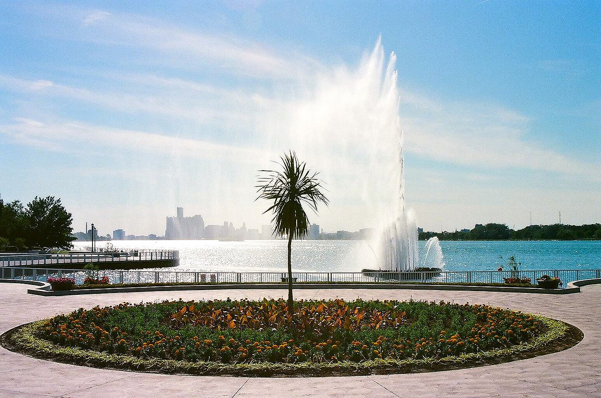

Coventry Gardens (Reaume Park)
Address: 4714 Riverside Dr. E., Windsor, ON
sourced from Wikimedia Commons
Coventry Gardens is a jewel along Windsor's riverfront, offering breathtaking views of the Detroit skyline. Its most famous feature is the Charlie Brooks Memorial Peace Fountain, a spectacular floating fountain that delights visitors with its dazzling light and water displays. The park is a tranquil oasis, with beautifully manicured gardens, walking paths, and plenty of seating areas to relax and enjoy the scenery. It's a popular spot for leisurely strolls, photography, and quiet contemplation. The gardens are meticulously maintained, showcasing a vibrant array of flowers and plants throughout the seasons. As a cornerstone of the Peace Trail, Coventry Gardens serves as a symbol of the enduring friendship between Canada and the United States, making it a significant and beloved landmark in the city.